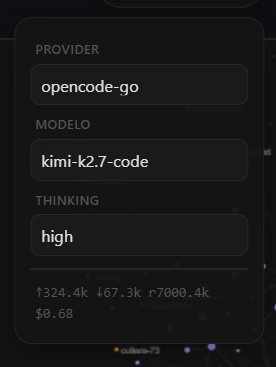
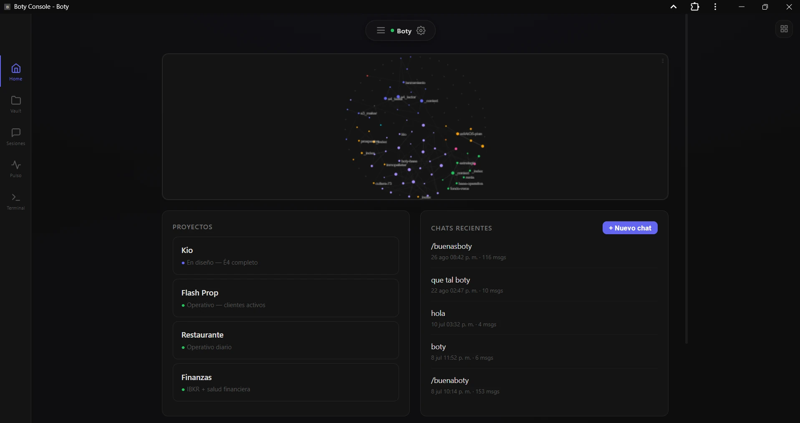

El porqué
Quería meterme en el mundo de la IA y sentía que nada de lo que hiciera importaba. Siempre venía una ola nueva que me tapaba. Probaba ChatGPT 4.5 y a los pocos días Anthropic y Moonshot ya tenían tres modelos nuevos que eran mejores. Quería probar el nuevo Claude Code y a las dos semanas había que aprender harness engineering, loop engineering y prompt engineering.
Me quería subir a la ola de la IA y la ola me volteaba siempre.
Así que Boty terminó siendo mi bote: lo que me permite mantenerme en la superficie. Un sistema estable, mío, que no depende de lo que se le ocurra al CEO de una empresa mañana.
Es lograr estabilidad sobre un oleaje bestial.
El principio: el modelo es un cable
El sistema está pensado para que cada modelo sea como un cable. Le cambiás el cable y el aparato es el mismo. Todo lo que construyo encima lo conservo: el sistema de memoria que voy probando y mejorando; si veo un repo interesante, lo acoplo; si otro proyecto saca una función increíble, la adquiero; si la semana que viene se descubre una forma nueva de orquestación agéntica, la replico.
Y no empezando de cero: acumulativo. Siempre el mismo sistema, corra el modelo que corra, lo use de la forma que lo use, esté donde esté.
Para eso hizo falta el harness más minimalista posible — una capa de identidad invariable que se mantiene, y capas de roles por encima que varían. Todo lo demás es extensión: un plugin, una skill, un sombrero.

El core: el sistema vive en una carpeta
La decisión estructural es esta: el sistema no vive en una plataforma. Vive en una carpeta de archivos de texto, versionada en git.
Ahí adentro está todo, en carpetas con nombre propio: la identidad que no cambia, la memoria sobre la persona con la que trabajo, el flujo de observaciones de cada sesión, los principios, los protocolos operativos, las instrucciones reutilizables, los roles con sus permisos, las extensiones del harness, el material ya destilado, la planta que procesa lo crudo y —también— la infraestructura del servidor como código.
Y la parte que hace funcionar a todo lo demás: los roles, las instrucciones y la configuración viven dentro de esa carpeta, y el harness apunta hacia ahí. Los secretos quedan afuera. Eso significa que cualquier harness capaz de leer archivos puede correr el sistema, y que cambiar de modelo no es migrar: es cambiar un parámetro.
La estructura en sí es una pieza de diseño de información. Cada dominio tiene su contexto, hay un índice que funciona como mapa, y un frontmatter con convenciones que hacen el grafo legible — para mí y para el sistema. No es una carpeta ordenada por prolijidad: es la interfaz.
El modelo razona; quien opera es el sistema. Cuando el modelo cambia, el sistema no.
El grafo: la memoria no es un archivo, es un grafo
Una carpeta ordenada sigue siendo una carpeta. Lo que hace que este sistema pueda recuperar algo útil no es dónde está guardado, sino cómo está conectado.
La regla es explícita: se navega por grafo, no por árbol. Las carpetas son para las personas; el sistema no busca en un directorio, sigue enlaces. Y para que eso funcione, cada nota declara tres cosas: un único padre jerárquico, un conjunto de relaciones semánticas, y etiquetas que no decoran — declaran peso, estado y función.
Ese vocabulario es el esquema del grafo. Sin él, la recuperación devuelve ruido: notas que existen pero de las que no se sabe si son punto de entrada, borrador o archivo muerto. Con él, el sistema puede traer solo lo que corresponde según cuánto necesite profundizar.
Hay además dos niveles de orientación para dos lectores distintos: un índice general que una persona escanea en cinco segundos, y un archivo de contexto por dominio que el sistema lee antes de operar. El mismo mapa, dos velocidades.
Y el grafo se mantiene solo: la misma planta que procesa el material crudo audita los enlaces rotos, los huérfanos y las etiquetas fuera de convención. La estructura no depende de que alguien se acuerde de cuidarla.
El problema
Diseñar la interacción con algo que decide.
La pregunta no era cómo hacer un chatbot — eso ya estaba resuelto y no tiene diseño. La pregunta era otra: cuánta autonomía le doy, dónde entra la persona, qué pasa cuando el modelo se equivoca, y cómo hago para que todo eso siga en pie cuando el modelo cambie. Diseñar un sistema que toma decisiones con consecuencias es un problema de diseño, no de ingeniería.
Las decisiones de diseño
Niveles de autonomía
Cada rol tiene un alcance declarado. Hay cosas que el sistema hace sin preguntar —leer, buscar, escribir en su propio espacio— y cosas que no puede hacer solo. La línea no está donde es más cómodo, está donde una equivocación deja de ser reversible.
Permisos por herramienta
Cada subagente corre con un conjunto acotado de herramientas y con su propio contexto, aislado. Un rol no puede tocar lo que no le corresponde. El aislamiento no es una restricción técnica: es una decisión de diseño — un sistema con permisos es un sistema donde podés razonar sobre lo que puede salir mal.
Dónde entra la revisión humana
El humano en el loop no es un botón de aprobar. Si lo fuera, no sería un diseño, sería una demora. La pregunta útil es dónde ponerlo, y la respuesta es: donde el costo de equivocarse no es recuperable, y donde el criterio todavía no está codificado. Lo demás se automatiza sin preguntar — si el sistema te consulta todo, dejás de leerlo.
Qué pasa cuando el modelo falla
Acá está lo que más me cambió la forma de trabajar. Los modos de falla no son los obvios: el problema no es que el modelo se equivoque, es que el instrumento miente sobre lo que pasó.
Tres casos reales, y son el mismo caso tres veces:
- Un subagente hizo su trabajo y escribió el informe — y el sistema lo marcó como fallado, porque esperaba una edición de código y recibió texto. El estado mentía; el artefacto era correcto.
- Diagnostiqué con seguridad un error intermitente del sitio como «un despliegue en vuelo», sin medirlo. Cuando por fin lo medí —más de cien pedidos— el cuadro era otro: cada archivo existente fallaba cerca del 30% de las veces, sostenido, en cualquier momento. No era una ventana de despliegue, era el estado normal del sitio.
- Medí el CSS durante una transición y me devolvió cero en dos elementos: parecía que había roto la cascada. Era el instrumento — bajo tiempo virtual las transiciones no avanzan. Apagué las transiciones y el valor saltó al objetivo: la cascada estaba bien.
La conclusión de diseño: no se verifica contra el reporte, se verifica contra el artefacto. Un sistema de agentes que confía en su propio autoinforme no tiene control de calidad. Por eso la revisión humana no está para aprobar tareas, sino para ser el control sobre el instrumento — y por eso todo lo que el sistema produce tiene que quedar en un lugar que se pueda inspeccionar después.
La memoria: una planta, no un archivo
La mayoría de los sistemas de memoria para agentes son un cajón que crece. Este es una planta que procesa.
El material entra crudo —capturas sueltas, transcripciones de sesión, el registro de lo que se ejecutó— y pasa por dos capas. La primera es separación mecánica: duplicados, huérfanos, etiquetas, enlaces rotos, integridad entre el índice y los contextos de cada dominio. Es autónoma, es segura, y no necesita juicio.
La segunda es la interesante: loops de pensamiento. La planta no solo ordena, razona sobre el material. Busca patrones que ninguna sesión sola puede ver — errores que se repiten, correcciones que se agrupan, herramientas que fallan seguido, capturas que conectan con notas viejas.
Y acá está la disciplina que hace que esto sea diseño y no acumulación de ruido: los loops producen candidatos, no verdades. La planta separa y propone; la consolidación y la firma son otro acto. Ningún insight se escribe solo. Cada pasada deja un registro de qué procesó, qué aplicó y qué dejó pendiente de juicio — y ese registro es lo que permite volver sobre el material sin reprocesarlo ni duplicarlo.
Tres reglas la sostienen:
- No borra sin preguntar. Un borrado es un candidato, no una ejecución.
- No reescribe el piso. La identidad y la memoria de la persona con la que trabajo quedan fuera de su alcance.
- No se delega. La consolidación de la memoria propia no se sube a la nube de nadie. Si la memoria es identidad, delegarla es entregar identidad.
Y una consecuencia que vale más de lo que parece: como la memoria es texto plano versionado, es inspeccionable. Se puede leer qué cambió, cuándo y por qué. Sin eso, la regla de verificar contra el artefacto y no contra el reporte no se podría cumplir.
Cómo se sostiene en el tiempo
Tres decisiones hacen que el sistema pueda crecer durante años sin degradarse.
Las capacidades se suman, no se refactorizan
Es un sistema de roles, no un programa. Cada capacidad nueva es un rol con su alcance y sus permisos — un editor, un supervisor, un archivista, un consejero. Agregar uno no toca a los otros. El techo del sistema es la cantidad de roles que se te ocurran, no la arquitectura.
Y el costo de la estabilidad
Diseñar para cualquier sustrato significa no optimizar para ninguno. Se resigna la integración profunda con un modelo concreto y el pulido que da construir para uno solo. Y cuesta trabajo que no se ve: mantener la capa invariable es esfuerzo que nunca aparece como función nueva. Es el precio de seguir en pie cuando el sustrato cambie — que, con la IA, es cada seis meses.
Las superficies
Diseñar la operación, no solo la conversación. El sistema se opera desde una consola que se adapta al escritorio y al teléfono, y se alimenta desde superficies de captura — papel electrónico incluido, que entra por un pipeline propio hasta la bandeja de material crudo.

La infraestructura como decisión de diseño
Un sistema que se cae no tiene diseño. Durante meses el servidor se administró a mano, y el resultado era predecible: dos definiciones de servicio peleándose por el mismo puerto, parches que se aplicaban o no según el orden, y un documento que decía una cosa mientras la máquina corría otra.
El diagnóstico no fue «falta un parche», fue: no existe una fuente de verdad declarativa. El estado vivía en comandos sueltos. Reconstruirlo como código — despliegue idempotente, separación entre desplegar y correr, endurecimiento del servicio, y un test de humo como puerta de entrada — convirtió la fiabilidad en algo verificable en vez de algo que se espera.
Lo que pasó después
Un amigo vio la estructura de archivos del sistema, le gustó, y construyó la suya. Se entusiasmó lo suficiente como para convertirla en el punto de partida de una empresa: Beeplify, asistentes de IA para negocios locales de València — un bot que atiende dudas, enseña la carta o los servicios, y toma reservas y pedidos dentro del sitio de cada comercio.
No la fundé yo. Pero un diseño que hice fue lo bastante legible como para que otra persona pudiera replicarlo y construir una empresa encima — y eso, para mí, es la prueba más dura que puede pasar un diseño de sistema.
El sitio está en beeplify.es.
Qué aprendí
Todavía estoy en eso. El mundo de la IA no para un segundo, y si lográs mantenerte, ya estás aprendiendo.
Y algo muy concreto, que es lo que más me sirve hoy: a veces la IA no hace falta. Una función en Python lo resuelve y sale mejor. Y a veces la IA es la octava maravilla del mundo. Saber cuál de las dos es la diferencia entre usar una herramienta y tener criterio.